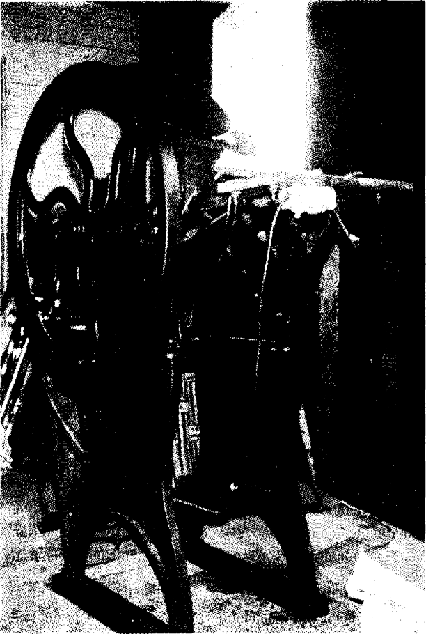

Bölüm 16
The Years
The Waves’den sonra 1937’de yayınlanan The Years’i okuyunca, büyük bir şaşkınlık geçiririz. Aynı yazar bu iki kitabı peş peşe yazmış olamaz deriz kendi kendimize. Çünkü Virginia Woolf, “Mrs. Brown and Mr. Bennett” gibi denemelerinde savunduğu ve üçüncü romanından, yani Jacob’s Room’dan sonra uyguladığı kendine özgü yeni yöntemlerden vazgeçmiş, geleneksel roman türüne geri dönmüştür. The Years, Mrs. Dalloway’de, To the Lighthouse’da, The Waves’de denediklerinin bir devamı değil; ilk iki kitabının The Voyage Ou t ile Night and Day’in bir devamı, üstelik daha başarısız bir devamıdır. Virginia Woolf, romanla şiiri kaynaştırarak, roman türüne yepyeni bir biçim vermeyi aklından hiç geçirmemiştir sanki.
The Years geleneksel gerçekçi romanın tüm kalıplarına uyar: Olup bitenler tarih sırasına göre ele alınır. Kişiler kendi bilinç akımları ya da başkalarının izlenimleriyle değil; yazarın açıklamaları ve yorumlarıyla çizilir. Kişilerin yalnız iç dünyaları yansıtılmaz; gerçeklere bağlı kalarak, dış dünyanın olayları da anlatılır. Sözün kısası, The Years’de, ne içerik açısından bir yenilik görülür, ne de biçimsel açıdan. Bu roman, Virginia Woolf’un yıllarca eleştirdiği gerçekçi geleneksel romana bir ödünden başka bir şey değildir. Peki, yazar o güne değin hiçbir romancının yapmayı bile düşlemediği bir deneyimi başarıyla uygulamaya koyup The Waves’i yazdıktan sonra, neden böyle bir ödün vermek gereğini duydu? Yorulmuş muydu, bezmiş miydi, tükenmiş miydi? Aynı yolda daha ileri gitmesinin olasılığı bulunmadığı kaygısına mı düşmüştü? İşin kolayına gitmek, herkesin kolayca anlayabileceği bir kitap mı yazmak istiyordu?
İşin en garip yanı, Virginia Woolf’un, geleneksel romana geri dönmekle bir ödün verdiğinin hiç bilincinde değilmiş gibi bir tutum benimsemesidir. Kasım 1932 güncesinde, “the novel of facts”den yani olgular anlatılan romandan bunca yıl uzak kaldıktan sonra, olguları yeniden ele almaktan sonsuz bir haz duyduğunu yazar. Bu olguları, hiç farkına varmadan yirmi yıldır hep gözlediğini, hep biriktirdiğini söyler. Şimdi bunları kâğıda dökmek onu çok keyiflendirir. The Waves’i bir şiir-roman olarak tasarladığı gibi, The Years’i de bir “essay-novel” (deneme-roman) olarak tasarlamıştır. Bu deneme-roman tâ 1880’de başlayacak ve şimdiki zamana, yani yazıldığı 1930’lu yıllara kadar gelecek, yarım yüzyıldan uzun bir süreyi kapsayacaktır. Yaşam ve toplum, bütün değişik yanlarıyla görülecektir burada. Tarihle, siyasetle, eğitimle, cinsellikle, feminizmle, sanatla, edebiyatla ilgili “milyonlarca düşünce” (“millions of ideas”) üretilecektir. Bu yeni kitabı, “tüm bildiklerinin, hissettiklerinin, alay ettiklerinin, hor gördüklerinin ve sairenin bir özetlemesi olacaktır” (“a summing up of all I know, feel, laugh at, despise, like, admire, hate and so on”).
Virginia Woolf, The Waves’den sonra böyle bir romanı çok kolay yazacağını sanmıştı. Ama hiç de öyle olmadı. Çünkü bu tür bir roman, hem yirmi yıldır yazdıklarına aykırı düşüyordu, hem de çok ağır bunalımlar geçiriyordu o sırada. Ruhsal çöküntüleri birbirini hızla izliyor, bir depresyondan çıkıp bir yenisine giriyordu. Mahvolduğunu, 1913’ten beri uçurumun kenarına böylesine yaklaşmadığını yazıyordu güncesinde. Hattâ yazmakta olduğu kitabı yakmayı bile düşündü bir ara. The Years’i tamamlayabilmek için tam dört yıl didindi durdu. Bu dört yılı, çok uzun bir doğum sancısına benzetti. 5 Kasım 1936’da, ona bunca acı çektiren kitabı gözyaşları içinde bitirdikten sonra, The Years’i The Waves’den daha çok sevdiğini yazdı güncesine. Ama kendi kendini aldattığını anlayacaktı çok geçmeden.
Virginia Woolf geleneksel bir roman yazdığına göre, böyle bir romanda bir olay örgüsü anlatılması gerekirdi. Oysa değil bir olay örgüsü, olay sayılabilecek bir durum bile bulunmaz The Years’de. İlkin “The Pargiters” adını vermişti kitaba. Bu ad çok yerindedir aslında. Çünkü romanda Pargiter ailesinin üç kuşağı ele alınır. Virginia Woolf’un hiç beğenmediği John Galsworthy’nin The Forsyte Saga’sında (Forsyte’ların Destanı) olduğu gibi, bir ailenin kuşaklar boyu öyküsü anlatılır. Bu öykü, yarım yüzyıldan uzun bir zaman dilimini kapsayarak, tâ Victoria Çağında 1880’de başlar, kitabın yazıldığı tarihe kadar gelir, demin belirttiğimiz gibi. On bir bölümden oluşan kitabın her bölümüne, “Yıllar” adına uyularak bir tarih verilir. Örneğin, birinci bölümün adı 1880’dir, ikincinin 1891, üçüncüsü 1907, vb. En uzun bölüm olan, kitabın nerdeyse yarısını kapsayan on birinci ve son bölüm “The Present Time” (Şimdiki Zaman) adını taşır.
Dekor gene Londra’dır. Mrs. Dalloway’de olduğu gibi. Ama bu kez Virginia Woolf, gerçekçiliğe uymak kaygısıyla, sevgili kentinin güzel yanlarından çok, çirkin yanları üstünde durur: Londra’da yoksulluk ve mutsuzluk egemendir. Frengiden burnu düşmüş kadın dilenciler vardır. Ellerini kollarını sallayarak kendi kendine bağıran, acılarını dile getiren deliler vardır. Lapa lapa kar yağarken kahkahalar atan garip zenciler vardır. Yazarın çarpıcı bir imgeyle belirttiği gibi, Londra, “ölü balıkların ve yıpranmış kızartma tavalarının kentidir” (“city of dead fish and worn-out frying-pans”). Virginia Woolf, kentin sefaletine değindiği gibi, toplumsal yaralarına da değinmek ister. Hattâ kimi eleştirmenlere göre, toplumsal yapının zulmünü ve haksızlıklarını hiçbir başka kitabında böylesine deşmemiştir. Son bölümde, romanın kişilerinden Peggy, felâketlerle, zorbalıklarla, işkencelerle böylesine dolu bir ülkede, insanın mutlu olamayacağından, özgürlük diye bir şey kalmadığından yakınır. Ama ne yazık ki, bu yakınmalar bize çok inandırıcı gelmez. Çünkü Virginia Woolf bir yandan bunları söylerken; bir yandan da, Hitler o sıralarda iktidara geldiği, faşizmin çirkin yüzü olanca iğrençliğiyle ortaya çıktığı halde, daha önce de sözünü ettiğimiz anti-semitizmini dile getirmekten kendini alamaz. Alman basını çok büyük burunlu Yahudi karikatürleriyle dolup taşarken, bir bayanın büyük “Yahudi burnunu” (“Jewish nose”) alaya alır. Pargiter ailesinden Sara, oturduğu pansiyondaki banyosunu bir Hıristiyanla paylaşmaya katlanır; ama Yahudilerin pisliği konusunda Nazi propagandasına inanmışçasına, bir Yahudiyle paylaşmaya katlanamaz (Yazarın o eşsiz kocasının da Yahudi olduğunu anımsatmakta yarar var). Sara para kazanmak için bir iş bulmayı, başka bir pansiyona taşınmayı düşünür. Bu arada emeğiyle geçinenlere de hakaret eder: “Köle ruhlu” (“servile”) işçiler ordusuna katılması mı gerekecektir, “because of a Jew in my bath, all because of a Jew” (banyomda bir Yahudi yüzünden, hep bir Yahudi yüzünden?) diye sorar kendi kendine. Oxford’daki bir Yahudi öğrenciden söz ederken, yazar, “Jewish boy” demez; “Jew boy” der. Ve İngilizceyi iyi bilenler, “Jewish boy” demenin aşağılayıcı olmadığının, ama “Jew boy” demenin aşağılayıcı olduğunun hemen farkına varırlar. Bu Yahudi öğrencinin Eski Yunanca öğrenmesi, gülünç bulunur. Çünkü yüksek sınıftan Pargiter’lerin torununun Eski Yunanca öğrenmesi güzeldir, ama bir Yahudi çocuğunun aynı dille uğraşması komik gelir yazara. Üstelik bu Yahudi çocuğu, Birmingham gibi bir sanayi kentinden gelmiştir; yani aşağı sınıftan bir gençtir büyük bir olasılıkla. Bu tür önyargıları Virginia Woolf gibi büyük bir yazara yakıştırmanın yolu yoktur.
Pargiter ailesinin reisi olan ve Hindistan’daki büyük ayaklanma sırasında sağ elinin iki parmağını yitiren Albay Abel Pargiter’in, her an ölmesi beklenilen, ama bir türlü ölmeyen bir eşi; Mira adında, para peşinde koşan, bayağının bayağısı bir metresi ve dördü kız (Eleanor, Milly, Delia, Rose), üçü erkek (Martin, Morris, Edward) yedi çocuğu vardır. Bu yedi çocuğun eşleri, evlatları, kız ve erkek yeğenleri; onların da eşleri ve çocukları vardır elbette. Öyle ki, kimin kimin nesi olduğunu belleğinde tutmak bir hayli güç gelir okuyuculara. Böylece romanın bir kusuru fazla uzun olmasıysa, öteki ve daha vahim kusuru, kişi sayısının fazlalığıdır. Yazar, dikkatimizi dört beş kişi üstünde toplayacağına, yirmiden fazla kişiyi ele alır. Yaşlı hizmetçi Crisby ve daha başkaları gibi, bir iki sayfada görünüp sonra yok olanlar da vardır bu kalabalık arasında. Bu yüzden dikkatimiz dağılır; The Years bir bütün oluşturamaz; hep bölük pörçük izlenimini verir. Kişiler, yarım bırakılmış portreleri andırır.
İlkin Albay Pargiter’in çocuklarını ele alalım. Bu çocukların en büyüğü Eleanor, romanın başından sonuna değin göründüğü ve öteki kişilerin çoğundan farklı olarak, az çok gerçek bir insan izlenimini verdiği için, The Years’in odak noktası sayılabilir. Eleanor, her zaman güler yüzlü, her zaman anlayışlıdır. Gencecik bir kızken bile, çocukların ablası olarak sorumluluklarının bilincindedir. Kardeşi Milly’nin gözünde, dünyanın en iyi yürekli, en akıllı insanıdır. Çok varlıklı olmayan Pargiter ailesinin bütün yükünü Eleanor taşır. Hattâ kimi zaman, bu yükü yalnız aklıyla değil, bedeniyle de taşıyormuş gibi bir duyguya kapıldığı olur. Bir ara merdivenleri inerken, başının üstünde her an kırılabilecek bir testi taşıyormuşcasına, o testi düşmesin, kırılmasın diye, kollarını başına doğru kaldırır. Eleanor, renkli serüvenlerle dolu bir yaşam ister aslında. Yetmişini geçmişken bile, ne zaman özgürlüğüne kavuşacağını “bir mahzene kapatılmış bir sakat gibi” (“like a cripple in a cave”) yaşamaktan ne zaman kurtulacağını sorar kendine. Ama sorumluluk duygusu, onun yakasını bırakmaz. Yeğenlerinden North, “bir bulaşıcı hastalık” saydığı aile bağlarından (“the contamination of family life”) onu kurtarmak ister; ama bunu başaramaz. Eleanor’un kendine özgü bir yaşamı yok gibidir. Yıllar yılı kardeşlerinin yaşamını yaşar sanki. Hiç evlenmemesinin nedeni de budur. Ama ne gariptir ki, iyice yaşlandıktan sonra, borsada oynayıp bol para kazanınca, yaşamı bir hayli renklenir. Bir mahzende yaşayan bir sakat olmaktan kurtulur. Yolculuklara çıkar; Yunanistan’a, İspanya’ya, hattâ Hindistan’a gider.
Eleanor’u mutsuzluktan kurtaran iki şey vardır. Birincisi, çoğu yaşlılar gibi geçmiş zamanda değil, şimdiki zamanda yaşamasıdır. “Elimde ancak şimdiki zaman var” diye düşünür. İşte buradaydı, canlıydı” (“I’ve only the present moment, she thought. Here she was, alive”). Yeğenlerinden biri, geçmiş günleri çok güzel, çok renkli sanıp, Eleanor’un o günleri anlatmasını isteyince; yaşlı kadın, şimdi yaşadığı günlerin çok daha heyecan verici, çok daha güzel olduğunu söyler. Eleanor’un mutlu bir insan olmasının ikinci nedeni, yalnız kendi ailesine karşı değil, tüm insanlara karşı kendini sorumlu hissetmesi, siyasal açıdan ilerici görüşler benimsemesi, toplumsal sorunları çözümlemeye çalışmasıdır. Yoksullar için yapılan konutları denetlerken, damların aktığının farkına varınca, kıyametleri koparır. Müteahhitleri azarlarken de, hiç hoşlanmadığı bir tavır takınır; kişiliğinden etkilenip, damları doğru dürüst yapmaları için, yüksek sınıftan bir kadının -albayın kızının- ses tonuyla konuşur onlarla. Yeğenlerinden Peggy, yaşlı Eleanor’un küfrederek bir gazeteyi parçaladığını görünce, hayrete düşer. Onun gazetede gördüğü, ağzını açmış nutuk atan, ablak yüzlü şişman bir adamın resmidir sadece. Ama Eleanor, bu gülünç şişkonun Mussolini olduğunu; böylelerinin iktidara gelmelerinin, kendisi gibi insanların “sevdikleri her şeyin, özgürlük ve adaletin sonu” olduğunu bilir (“it means the end of everything we cared for; freedom and justice”). Gerçi Eleanor, faşizme fena halde öfkelenir; ama onun en hoş yanlarından biri, insanlara karşı gösterdiği sonsuz hoşgörüdür. Örneğin, genç akrabalarından biri, ona Polonyalı eşcinsel Nicholas’ı tanıtırken (Virginia Woolf’un romanlarında eşcinsel bir erkek mutlaka bulunur) Eleanor’un bu adamın yüzüne bile bakmayacağını sanır. Oysa güzel bir dostluk kurulur yaşlı kadınla genç eşcinsel arasında.

Hogarth Press’teki ilk pedallı baskı makinası. The Years de Woolf’un bütün kitapları gibi bu makinada basıldı.
Delia Pargiter, ablası Eleanor gibi bencillikten arınmış, özverili bir kız değildir. Baba evinden uzaklaşabilmek, kendi yaşamını özgürce yaşayabilmek için, ölüm ile yaşam arasındaki sınırda yıllardır duraksamakta olan annesinin bir an önce ölmesini ister. Annesi fenalaşınca, sevinir; iyileşince, üzülür. Annesini sevmek ister, sever de bir bakıma. Ama annesi yaşamakla, onun yaşamasını engellemektedir. Bu kızın annesine karşı duyguları, Virginia Woolf’un babasına karşı duygularının bir yansıması gibidir aslında. Delia’nın annesinin ölümünü sabırsızlıkla beklemesinin nedeni, canı istediği gibi yaşamak, hoş vakit geçirmek değildir. Bir ideali vardır onun. Bu ideal, İrlanda bağımsızlık savaşının ünlü kahramanı Charles Stewart Parnell’e (1846-1891) tutkusundan kaynaklanır. Delia’nın hiç görmediği Parnell’e tutkusunda, adamın siyasal liderliğinden çok, erkek olarak çekiciliğinin bir payı vardır herhalde. Çünkü İrlanda’nın taçsız kralı denilen Parnell, yakasına her zaman beyaz bir çiçek takan, çok romantik ve çok karizmatik bir erkektir. Evli bir kadınla duygusal ilişkisinden yararlanan düşmanları, onu mahvetmenin yolunu bulmuşlardı sonunda. Delia’nın babası tutucu Albay Pargiter’in gözünde Parnell, ahlâk düşkünü bir serüvenci, İngiltere’yi yıkmak isteyen tehlikeli bir ajitatördür. Ama Delia’nın gözünde bir tanrıdır. Dünyada tek isteği Parnell’e destek olmak, toplantılarda onun yanında bulunmak, kalabalık mitinglerde onu yüceltmek için söylevler vermek, adalet ve özgürlük uğruna İrlanda dâvâsını canla başla savunarak onun sevgisini kazanmaktır. Delia bunları yapamaz elbette. Ama Parnell’e tutkusu yüzünden bir İrlandalıyla evlenir. Bu İrlandalının Parnell’in inançlarını paylaşacağını sanmıştır. Oysa kocası Patrick, Büyük Britanya İmparatorluğuna da, onun başındaki hükümdara da hayran, İngiltere’yi dünyanın en uygar ülkesi sanan tutucu bir toprak sahibidir. Bu durum başlıbaşına bir roman olabilirdi elbette. Ne var ki The Years’de Virgina Woolf kişilerini izlemediği, bir ele alıp bir bıraktığı için, Delia’nın bu evliliğe nasıl uyum sağladığını bilemeyiz; üç çocuğu olduğunu öğreniriz ancak.
Yazarın Delia üstünde durmamasını hoşgörebilsek bile, Pargiter ailesinin en küçük kızı Rose üstünde keşke durabilseydi deriz kendi kendimize. Çünkü Rose ilginç bir kadındır. Ne yazık ki, o da bir çıkar, bir yok olur romanda. Onu ilkin yedi yaşındayken, sonra da kırk iki yaşındayken görürüz. Bu arada nasıl geliştiğini, başından neler geçtiğini bilemeyiz. Yazar Rose için, “had lived in many places, felt many passions and done many things” (birçok yerde yaşamıştı, birçok tutku duymuştu, birçok şey yapmıştı) demekle yetinir; bunların neler olduğunu bildirmeden.
Rose, yedi yaşındayken çok çirkin bir durumla karşılaşır. Geceleyin sokağa çıkar, hayaller kurarak, koşar durur. Sözde atına binmiş, düşmanın kuşattığı bir kaleye bir mesaj götürmek üzere gidiyordur. Bu mesajı kaleye kumanda eden generale vermezse, askerlerin hepsi ölecektir. Rose düşler içinde böyle koşarken, bir herif karşısına çıkar ansızın; küçük kızı yakalamaya kalkar. Yakalayamayınca da, pantolonunun düğmelerini çözmeye başlar. Bu adamın pis yüzü, Rose’un karabasanlarına girer o gece. Ama bilmediği, yazarın da açıklamadığı bir nedenden ötürü korkunç bir suçluluk duygusuna kapıldığı için, ablası Eleanor’a derdini açamaz. Geçirdiği bu şokun, hiç evlenmeyen Rose’un erkeklere karşı tutumunu ve cinsel yaşamını nasıl etkilediğini bilemeyiz. Ancak Rose, kırk iki yaşındayken, kardeşi Martin’e, çocukların çok derin acılar çektiklerini ve bu acılarını hiç kimseye anlatamadıklarını söyler. Aile yuvasından da, aile bağlarından da nefret ettiğini açıklar bu arada.
Rose, ablası Eleanor gibi, yoksullara yardım işleriyle uğraşmakla ve siyasal açıdan ilerici görüşler benimsemekle yetinmez. İngiltere’nin dört bir yanında, siyasal eylemlerde bulunur. Polise taş attığı için hapse girdiği de olur ara sıra. Geceleri Londra’da gezinirken, yumruğunu Parlamento binasının parmaklıklarına vurup, hakaret eder Parlamento üyelerine. Bir seçim propagandası sırasında saldırıya uğradığını, çenesinden yaralandığını ve bu yara iziyle gururlandığını öğreniriz. Akrabalarından Sara, Rose’un “gül” anlamına gelen adı üstünde oynayarak, “wild Rose, thorny Rose” (vahşi gül, dikenli gül) der ona. Rose’un gerçekten vahşi bir yanı vardır. Daha küçükken ağabeyi Martin’e öfkelenince, banyoya kapanır, bileklerini kesmeye kalkar. Rose, yiğittir, hattâ belâlıdır. Eleanor, kardeşi Martin’in değil, asıl Rose’un asker olması gerektiğini düşünür. Sara, Rose’u atına binmiş, altın zırhlar içinde bir düşmana saldırırken hayal eder. Rose, hiç kimsenin savunmadığı dâvâları da savunur. Örneğin, hırsızlardan çok hoşlandığını söyleyerek, hırsızlık suçundan hapse düşen çocuklara okuma yazma öğretir.
Yazar, Pargiter ailesinin dört kızından biri olan Milly konusunda pek bir şey söylemez. Erkek kardeşinin arkadaşlarından biriyle evlendiğini, çocukları olduğunu, yaşlanınca kendisinin de kocasının da çok şişmanladığını biliriz ancak. Erkeklere gelince, Morris’in avukat olduğu, evlendiği, onun da çocukları olduğu bildirilir. Martin subay olur; Hindistan’da ve Afrika’da savaşır; sonra ordudan ayrılır. Edward, Oxford’da öğretim üyesidir. Sophokles’i İngilizceye çevirir. Yeğeni North’a bakılacak olursa, başlıca uğraşı Eski Yunan edebiyatı olduğundan, modern çağın bayağılığı kolay kolay bulaşamamıştır ona. Ama canlılığını da yitirmiş, eskiden çok yakışıklıyken, şimdi kurutulmuş bir böceğe dönmüştür.
Pargiter ailesinin üyeleri arasında, Kitty gibi zaman zaman görünüp dikkatimizi çekenler vardır. Edward’ın âşık olduğu Kitty Malone, Oxford’daki kolejlerden birinin başkanının kızıdır. Orada doğup büyümüştür ve ömrünün geri kalan kısmını orada geçirmek istemediğinden, kardeş çocuğu Edward’ı reddeder. Çok varlıklı Lord Lasswade ile evlenir, üç oğlu olur. Kitty’nin kendisinden çok, ilişki kurduğu kişiler ilginçtir. Bunlardan Lucy Craddock, Oxford’un ilk kadın hocalarından biridir. Kitty, kendisine özel ders veren bu kadına hayrandır. Hayran olduğu ikinci kişi, Profesör Robson’dur. O sıralarda Oxford’da bir kadın öğretim üyesi görülmedik bir yenilik olduğu gibi, işçi sınıfından gelen Profesör Sam Robson da görülmedik bir yeniliktir. Belki de bu yüzden, Lucy Craddock ile Sam Robson arasında gizli bir dayanışma vardır. Öteki hocalar, salt kadın olduğu için Lucy Craddock’u alaya alıp hor görürken, Profesör Robson, bu çok bilgili kadına saygı duyar. Bir işçi çocuğu olması hiçbir aşağılık duygusu vermez Robson’a. Tam tersine, bununla gururlanır. Yorkshire şivesini büsbütün abartarak, eşinin kendisiyle evlenmeden önce bir zengin evinde ahçılık ettiğini övüne övüne anlatır. Sam Robson’u dünyanın en cana yakın insanı sayan Kitty, yüksek sınıftan Malone’lerin kızı olacağına, keşke Robson’ların kızı olsaydım diye düşünür. Ailenin oğlu Jo’dan da çok hoşlanır. Çünkü Jo, varlıklıların özel okullarında yetişmemiş, dolayısıyla doğallığını koruyabilmiştir. Jo, on beş yaşındayken bir gün onu öpüveren genç çiftçiyi anımsatır Kitty’ye. Ne var ki, Kitty, Malone’lerin kızıdır. Ona küçüklüğünden beri aşılanan İngiliz yüksek sınıfının önyargılarından kurtulmasının yolu yoktur. Bu yüzden de, o genç çiftçi ya da Jo gibi bir delikanlıyla değil, varlıklı bir Lord ile evlenir daha sonraları. Kitty, ayrıca mutsuz hissetmez kendini. Ama gerçekten mutlu olduğu da pek söylenemez. Örneğin, salonunda oturan yüksek sınıftan kadınlara bakar bir ara. Onların giysileri, mücevherleri, takındıkları yapay tavırlar, söyledikleri boş sözler ellerinden alınsa, geride bir hiç kalacağını bilir. Ama kendisinin de onlardan farksız olduğunun, yaşamı boyunca hiçbir şey yapmadığının bilincindedir. Kitty, ancak dul kalıp yetmişini geçtikten sonra, yaşam karşısında tedirginliği azalır. Yaşlılığın insanın ömründe çok olumlu bir dönem olabileceğini anlayan ender ihtiyarlardan biridir. “How nice it is not to be young! Now one can live as one likes” (Genç olmamak ne güzel şey! Şimdi insan istediği gibi yaşayabilir) der.
Sara (Sally de derler ona) ve Maggie, Albay Pargiter’in erkek kardeşi, siyaset adamı Digby Pargiter’in kızlarıdır. Annelerinin ve babalarının ölümünden sonra, evleri satılır, yoksul kalırlar. Maggie, Rene adlı bir Fransızla mutlu bir evlilik yapıp Fransa’ya yerleşir. Eleanor, bu Fransızı öyle hoş bulur ki, genç olsaydı, onunla evlenmek isteyeceğini söyler. Yazar, Maggie’den çok Sara üstünde durur. Bebekken dadısı onu kucağından düşürdüğü için, Sara’nın bir omuzu hafif çarpık kalmıştır. Sara’nın Yahudilere ve yoksullara karşı önyargılarından daha önce de söz etmiştik. Bir meyhaneye bitişik bir evde otururlar bir ara. Sara, “nasty little creatures” (pis küçük yaratıklar) diye söz eder o meyhaneye dadananlardan. Ne var ki, basit bir kadın olmadığı için, çirkinlikle güzelliğin her zaman yan yana bulunabileceğini de bilir. Londra’nın güneş battıktan sonra daha çok ortaya çıkan sefaletine bakarken, kentin gecelerinin, hem küfürler ve acımasız bir şiddetle, hem de güzellik ve sevinçle dolup taştığını görür. Sara’nın bir ara İstanbul’a gittiğini de anlarız. Çünkü kılık kıyafetine hiç aldırmayan, dalgınlıkla ayrı ayrı renklerde çoraplar giyen Sara, “sarıklı ve fantastik bir Türk’ten” (turbaned and fantastic Turk) aldığı çok güzel bir giysiyi giyer bir toplantıda. Sara hiç evlenmez; Polonyalı eşcinsel Nicholas ile yakın bir dostluk kurar. Öyle yakın bir dostluktur ki bu, yaşlı Eleanor onların birlikte nasıl gülüştüklerine bakarken, aşk denilen şeyin bu olduğunu düşünür. Virginia Woolf, Nicholas üzerine biraz daha fazla durmak zahmetine katlansaydı, ilginç bir eşcinsel portresi çıkarabilirdi ortaya. Ama bunu yapmadığı için, Amerika uyruğu olduğu halde Polonyalıyım diye direnen bu adamın herkesi neden böylesine büyülediği anlaşılmaz. Belki eşcinsel eğilimleri olduğu için Nicholas’ın en çok büyülediği kişilerden biri de North’tur. North, Morris’in oğlu ve Albay Pargiter’in torunudur. Uzun süre Afrika’da bir çiftliği yönettikten sonra, İngiltere’ye geri dönmüştür. North da daha ayrıntılı çizilseydi ilginç olabilirdi. Ama Eleanor bir yana, bu Pargiter’ler konusunda çok az şey bildiğimiz gibi, North üstüne de bilgimiz azdır. North, kitabın sonundaki aile toplantısında, annelerle babaların, sadece kendi çocuklarına düşkün, başkalarının çocuklarına kayıtsız olmaları karşısında dehşete düşer. Belki de çocuksuz Virginia Woolf’un çocuklulara tepkisini yansıtarak, bu anne babaları, yavrularını pençeleriyle koruyan vahşi hayvanlara benzetir.
Virginia Woolf’un hiç kimseyi doğru dürüst çizmeye niyeti yoktur The Years’de. North’a yaptığını, onun kız kardeşi Pegg’ye de yapar. İlginç olabilecek bu kadını da ele almasıyla bırakması bir olur. Pargiter’lerin üçüncü kuşağından Peggy, hekimdir; ama tıbba hiç inanmaz. “Doctors know very little about the body; absolutely nothing about the mind” (Doktorlar beden konusunda çok az şey biliyorlar; beyin konusunda ise, kesinlikle hiçbir şey bilmiyorlar) der. Peggy’nin inançsızlığı yalnız tıp konusuyla sınırlı değildir. Hiçbir şeye inancı yoktur. Halası Eleanor’un öfkelenerek Mussolini’nin resmini yırttığını görünce, bu yetmişlik kadının özgürlük ve toplumsal adalet gibi kavramlara hâlâ tutkuyla inanmasını aklı almaz. O eski inanmışlar kuşağından saydığı halası karşısında hayretlere düşer. Belki de bu inançsızlığı yüzünden, Peggy ancak otuz yedi yaşında olduğu halde, yaşamdan bezmiştir, mutsuzdur.
Leonard Woolf, The Years’i eşinin “ölü” (“dead”) romanlarından biri saymakta haklıydı. Yazarın yakın arkadaşı romancı E.M.Forster de, Virginia Woolf’un gerçekçiliğe geri dönüp “şiiri terk ettiği için başarısızlığa uğradığını” (“she deserts poetry and she fails”) söyler. David Daiches bir yana, çoğu eleştirmenler aynı kanıya varırlar. Ama The Waves’i beğenmeyen David Daiches, The Years’i fazla uzatılmış ve biraz bölük pörçük bulmakla birlikte, anlatımın güzelliğine her nedense hayran kalır. Bizlere çok garip gelen bir durum da, ilk çıktığı sıralarda, okuyucuların The Years’i çok tutmalarıdır. Garip diyoruz ama; aslında pek o kadar garip değildir bu. Çünkü alışılagelmiş türde, okuyucuların kolayca anlayabilecekleri bir romandır The Years. Virginia Woolf’un dediği gibi, bu kitap, bütün yazdıkları arasında rekorlar kırarak, 25,000 sattı; altı hafta Amerika’nın best-seller listesinde kaldı. Gelgelelim Virginia Woolf bu başarıyla avunamazdı. Çünkü The Years’in kötü olduğunun, kitap daha basılırken farkına varmıştı. Güncesinde “odious” (nefret edilesi) bulduğu The Years’in tashihlerini “ölü bir kediymiş gibi” (“like a dead cat”) kocasına götürdüğünü ve hiç okumadan yakmasını istediğini anlatır. Ama daha sonraları, belki de kendini savunmak, bir kitap daha yazmak gücünü bulmak için, güncesinde söyle der:
“The point is that I myself know why it’s a failure; and that it’s failure is deliberate.”
(Önemli olan şu ki, ben kendim biliyorum bunun neden bir başarısızlık olduğunu ve bile bile yapılan bir başarısızlık olduğunu.)